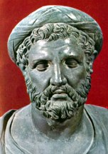

Παραστατικοί Αριθμοί
Οι Πυθαγόρειοι είχαν αναπτύξει ένα ιδιότυπο τρόπο συμβολισμού των αριθμών με τη βοήθεια «ψήφων». Με αυτό τον τρόπο ταξινομούσαν τους αριθμούς σε «άρτιους» και «περιττούς». Έτσι ένας άρτιος αριθμός απεικονιζόταν με μια σειρά ψήφων που μπορεί να χωριστεί σε δύο ίσα μέρη, ενώ το αντίθετο συνέβαινε με έναν περιττό.
Επίσης είχαν αναπτύξει ένα «παραστατικό» τρόπο απεικόνισης των αριθμών με τη μορφή κανονικών γεωμετρικών σχημάτων. Έτσι σχημάτιζαν ακολουθίες «τρίγωνων αριθμών», που ήταν διατεταγμένοι σε σχήμα τριγώνων, «τετράγωνων αριθμών», που ήταν διατεταγμένοι σε σχήμα τετραγώνων, «ορθογωνίων αριθμών», που ήταν διατεταγμένοι σε σχήμα ορθογωνίων:
 |
||
| Τρίγωνοι αριθμοί | Τετράγωνοι αριθμοί |
Ορθογώνιοι αριθμοί |
|
Στέλιος Παπανδρέου, Μιχάλης Τζούμας. Βασισμένο σε μια ιδέα του Θωμά Παπαδόπουλου. |
Πληροφορίες Λήψη Αρχείων Κλείσιμο |